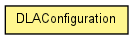

toxi.sim.dla
Class DLAConfiguration
java.lang.Object
 toxi.sim.dla.DLAConfiguration
toxi.sim.dla.DLAConfiguration
public class DLAConfiguration
- extends java.lang.Object

| Methods inherited from class java.lang.Object |
equals, getClass, hashCode, notify, notifyAll, toString, wait, wait, wait |
DLAConfiguration
public DLAConfiguration()
getContinuousGrowthBias
public float getContinuousGrowthBias()
getContinuousGrowthCoeff
public float getContinuousGrowthCoeff()
getContinuousGrowthRatio
public float getContinuousGrowthRatio()
- Returns:
- the continuousGrowthRatio
getCurveAlign
public float getCurveAlign()
- Returns:
- the curveAlign
getCurveAttachDistance
public float getCurveAttachDistance()
- Returns:
- the curveAttachDistance
getCurveAttachDistanceSquared
public float getCurveAttachDistanceSquared()
getCurveSpeed
public float getCurveSpeed()
- Returns:
- the curveSpeed
getEscapeRadius
public float getEscapeRadius()
- Returns:
- the escapeRadius
getGrowthScale
public toxi.geom.Vec3D getGrowthScale()
getGuideLineDensity
public double getGuideLineDensity()
- Returns:
- the guideLineDensity
getParticleRadius
public float getParticleRadius()
- Returns:
- the particleRadius
getParticleSpeed
public float getParticleSpeed()
- Returns:
- the particleSpeed
getSearchSpeed
public float getSearchSpeed()
- Returns:
- the searchSpeed
getSnapDistance
public float getSnapDistance()
- Returns:
- the snapDistance
getSnapDistanceSquared
public float getSnapDistanceSquared()
getSpawnRadius
public float getSpawnRadius()
- Returns:
- the spawnRadius
getStickiness
public float getStickiness()
- Returns:
- the stickiness
setContinuousGrowthBias
public void setContinuousGrowthBias(float bias,
float sd)
- Parameters:
bias - sd -
setContinuousGrowthRatio
public void setContinuousGrowthRatio(float continousGrowthRatio)
- Parameters:
continousGrowthRatio - the continuousGrowthRatio to set
setCurveAlign
public void setCurveAlign(float curveAlign)
- Parameters:
curveAlign - the curveAlign to set
setCurveAttachDistance
public void setCurveAttachDistance(float curveAttachDistance)
- Parameters:
curveAttachDistance - the curveAttachDistance to set
setCurveSpeed
public void setCurveSpeed(float curveSpeed)
- Parameters:
curveSpeed - the curveSpeed to set
setEscapeRadius
public void setEscapeRadius(float escapeRadius)
- Parameters:
escapeRadius - the escapeRadius to set
setGrowthScale
public void setGrowthScale(toxi.geom.Vec3D growthScale)
- Parameters:
growthScale - the growthScale to set
setGuideLineDensity
public void setGuideLineDensity(double guideLineDensity)
- Parameters:
guideLineDensity - the guideLineDensity to set
setParticleRadius
public void setParticleRadius(float particleRadius)
- Parameters:
particleRadius - the particleRadius to set
setParticleSpeed
public void setParticleSpeed(float particleSpeed)
- Parameters:
particleSpeed - the particleSpeed to set
setSearchSpeed
public void setSearchSpeed(float searchSpeed)
- Parameters:
searchSpeed - the searchSpeed to set
setSnapDistance
public void setSnapDistance(float snapDistance)
- Parameters:
snapDistance - the snapDistance to set
setSpawnRadius
public void setSpawnRadius(float spawnRadius)
- Parameters:
spawnRadius - the spawnRadius to set
setStickiness
public void setStickiness(float stickiness)
- Parameters:
stickiness - the stickiness to set